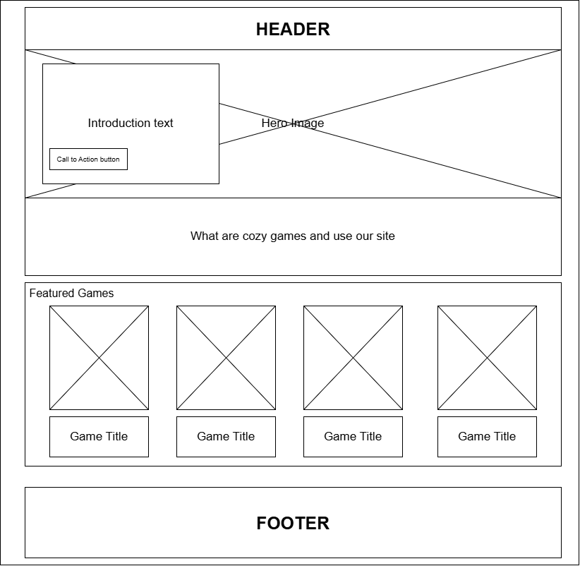
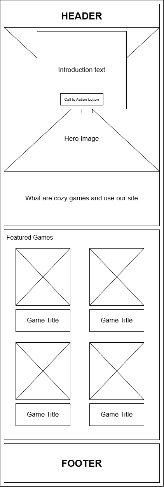
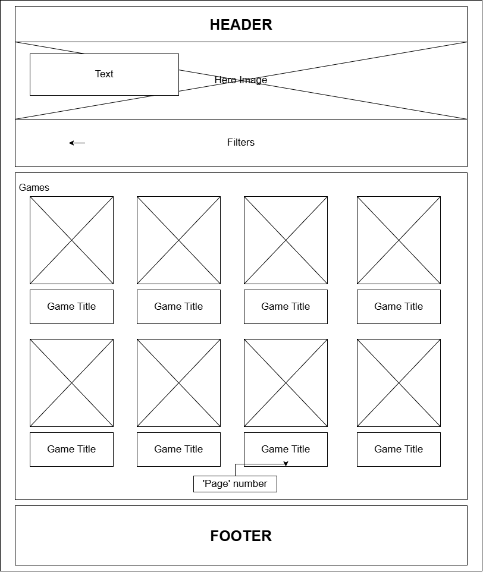
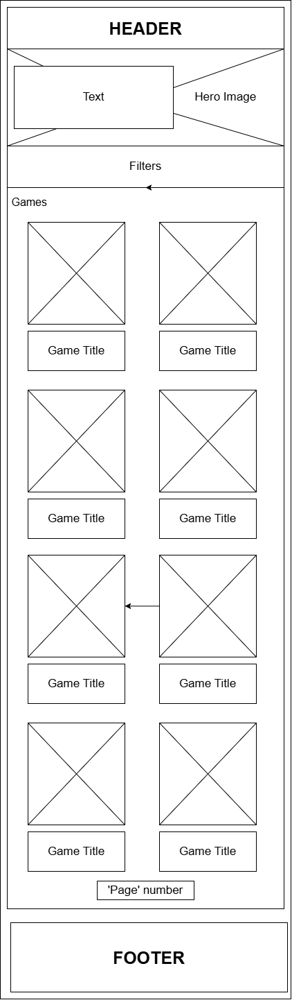
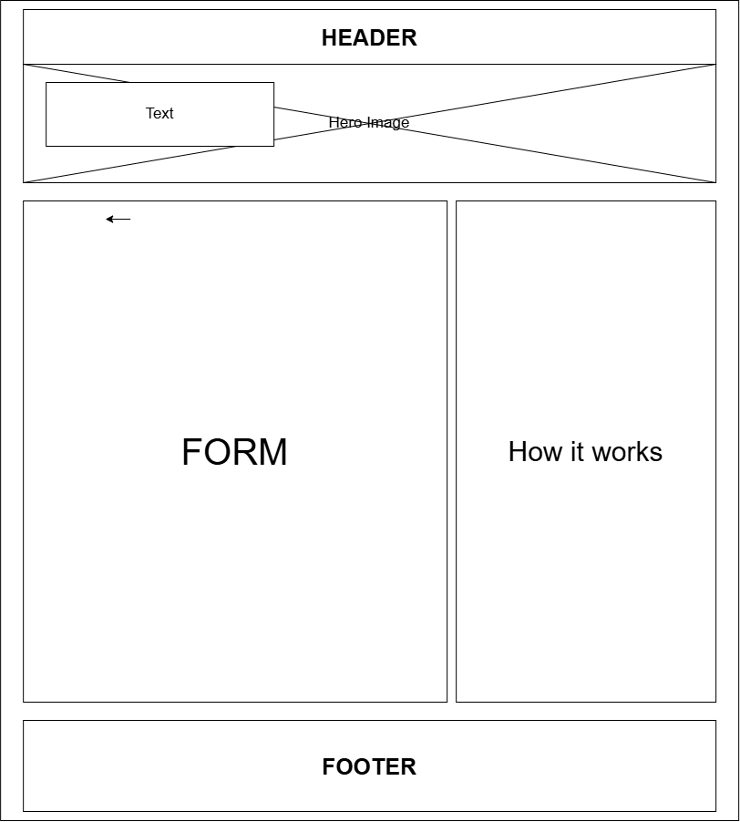
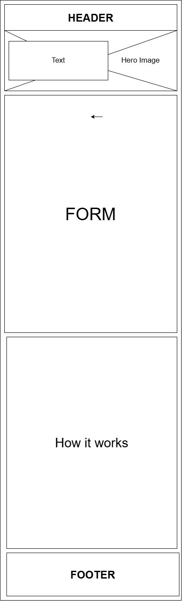

Site Purpose
This website is for casual video game players who enjoy relaxing and cozy games. It will allow users to browse a collection of cozy game, letting them discover new cozy games and save them for future reference. The site will also give detailed information about each game, and allow users to give cozy game recommendations to be added to the site through a form.
Scenarios
Scenario 1
I'm looking for a relaxing game to play. Which cozy games match my interests and what are they about?
Scenario 2
I only own a Nintendo Switch (or PC). Which cozy games are available on my platform?
Scenario 3
I don't want to spend a lot of money. What are some affordable cozy games?
Scenario 4
I found a game that looks interesting. Can I view more information about it, including its genre, supported platforms, rating, and description before deciding to play it?
Color Scheme
Main Background Color(Primary): #bfc3c7
Header and Footer Background Color(Secondary): #0A0D28
Accent Color: #252525
Text Colors: #fff, #000
Typography
Heading Fond: Bree Serif
Content Font: Source Sans 3
Wireframe
Home Page


Library Page


Recommendations Page

